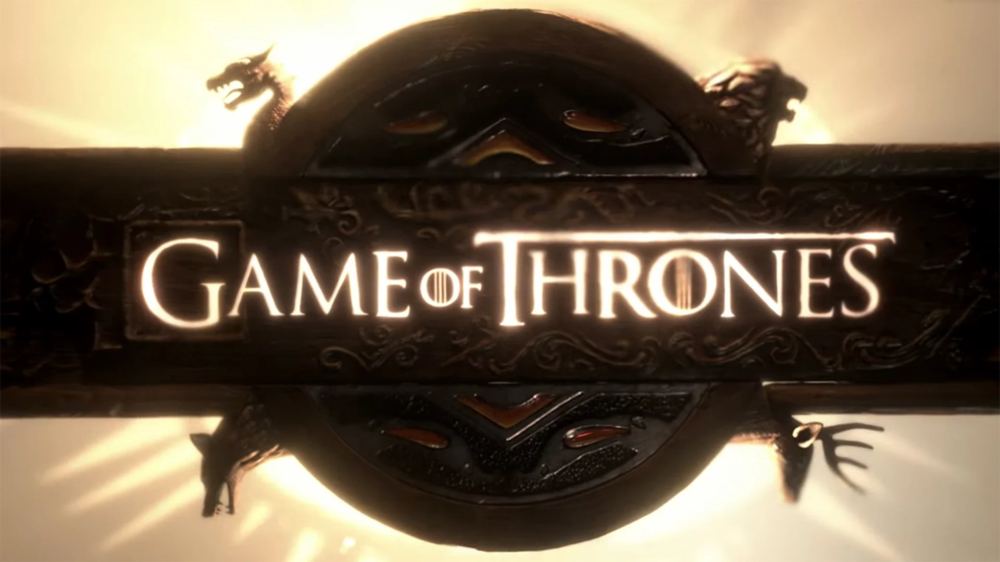

Introduction
"When you play the game of thrones, you win or you die." This iconic line from Cersei Lannister perfectly captures the essence of Game of Thrones—a world of power struggles, betrayal, and epic battles. Based on George R.R. Martin’s A Song of Ice and Fire series, the HBO show became a global phenomenon, blending fantasy with intense political drama. From the icy North of Westeros to the fiery lands of Essos, it tells the story of noble houses fighting for the Iron Throne, all while a greater threat looms beyond the Wall. In this presentation, we will explore the world of Game of Thrones, meet its unforgettable characters, uncover behind-the-scenes secrets, and discuss its lasting impact on television history. So, brace yourselves—this journey through Westeros is about to begin!.
